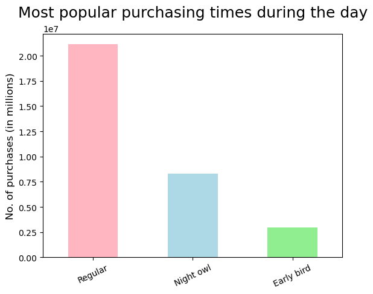

<!DOCTYPE HTML>
<!--
	Editorial by HTML5 UP
	html5up.net | @ajlkn
	Free for personal and commercial use under the CCA 3.0 license (html5up.net/license)
-->
<html>
	<head>
		<title>Portflio Tableau</title>
		<meta charset="utf-8" />
		<meta name="viewport" content="width=device-width, initial-scale=1, user-scalable=no" />
		<link rel="stylesheet" href="assets/css/main.css" />
	</head>
	<body class="is-preload">

		<!-- Wrapper -->
			<div id="wrapper">

				<!-- Main -->
					<div id="main">
						<div class="inner">

							<!-- Header -->
								<header id="header">
									<a href="index.html" class="logo"><strong>ISHITA</strong> BHASIN</a>
									<ul class="icons">
										
							
									</ul>
								</header>

							<!-- Content -->
							<section>
								<header class="main">
									<h1>Instacart Grocery Basket - Python Project</h1>
								</header>

								<span class="image main"></span>
								<h2>Background:</h2>
								<p>TThe Instacart stakeholders are most interested in the variety of customers in their database along with their purchasing behaviors. They assume they can't target everyone using the same methods, and they’re considering a targeted marketing strategy. They want to target different customers with applicable marketing campaigns to see whether they have an effect on the sale of their products. </p>
								<h2>Objective</h2>
								<p>Analysing sales patterns, performing exploratory analysis, and deriving insights for a better segmentation for an online grocery store, Instacart. The company is interested in understanding the purchase behavior from their customers, so they could deliver better targeted marketing campaigns. My role as Data Analyst is to give a recommendation.</p>
								<h2>Goal</h2>
								<p>Deliver a final report including tables and visualizations that profile Instacart customers based on their purchase behaviors.</p>
								<h2>Tools, Skills, Methodologies</h2>
								<p>Python and relevant libraries (pandas, NumPy, matplotlib, scipy, and seaborn).</p>
								
								<ul class="actions">
									<li><a href="https://github.com/ishitabhasin/InstacartAnalysis-Python" class="button primary">View the Project</a></li>
								</ul>
								<hr class="major" />
								
								<h2>Overview of the Project work</h2>

								<h3>Preparing the datsets</h3>
									<p>As with all datasets, the first step was <b>preparing the datasets</b> for usage 
										(we had 3 different datasets - orders, products and customer). This involved the below steps:
										
									<li><b>Consistency Checks:</b> Checking if values are missing or duplicate and checking for mixed type variables.</li>
									<li><b>Wrangling steps:</b> Changing columns headers and data types or creating new data frames.</li>
									<li><b>Column derivations and aggregations:</b> Creating new columns/variables and aggregated variables.</li>
									</p>
									
									
								<h3>Merging the datasets</h3>
									<p>The next step involved mergeing these datat sets .Once merged, we had a dataset of almost 30M rows and 30 columns! 
										This merged dataset contained information in the orders each user had placed;
										the time and date of purchase; name of the product; the department; and demographic information of the customers (age, income, state,
										family status, number of dependants).</p>

									<h3>Customer Profiling</h3>
									<p>Making use of the liabraries in python, it was easy to navigate through the 30M entries. 
										The profiling was done to help answer the many questions of the marketing team, who wanted to undersatnd the customer behaviour.
										</p>

										<h3>Example of Code </h3>
										<div class="col-12"></div>
											<pre><code"># To create the customer profiling based on age group, we included 3 subprofiles based on age.
# The age of the customers were determined by the approximate of median calculated before
Cstmr.loc[(df_ords_prods_cstm['age'] >= 18) & (Cstmr['age'] < 40), 'age_group'] = 'Youth'
Cstmr.loc[(df_ords_prods_cstm['age'] >= 40) & (Cstmr['age'] < 65), 'age_group'] = 'Middle Aged' 
Cstmr.loc[Cstmr['age'] >= 65, 'age_group'] = 'Senior Citizens'</code></pre>
										


									<h3>Visual representation</h3>
									<p>Finally the data was represented visually via matplotlip liabrry of Python to send to the clients in a more understandable format.</p>
									
										<h4>Some of the visualizations</h4>
										<div class="box alt">
											<div class="row gtr-50 gtr-uniform">
												<div class="col-4"><span class="image fit"></span></div>
												<div class="col-4"><span class="image fit"></span></div>
												<div class="col-4"><span class="image fit"></span></div>
									
									<hr class="major" />
									<h2>Conclusion and Findings</h2>
									
									<p>Despite the challenges encountered and the ones that will remain as future tasks,
										these were the four key outputs extracted from all the data:</p>
										<ul>
											<p><b>Advertisement:</b> Schedule ads at times when there are fewer orders. Days: Weekdays (Monday to Thursday); Hours: from 15:00 to 6:00.</p>
											<p><b>Promotions:</b> Customers tend to place orders during regular hours. I suggest running limited time offers between 10:00 and 23:00.</p>
											<p><b>Products:</b> According to data, customers buy primarly food products. I suggest applying discounts on products of other departments.</p>
											<p><b>Segmentation:</b> Data shows differences between users categories.
												I suggest tailor advertisements to specific categories (e.g. ‘parents’)
												 </p>
										</ul>
									
								<hr class="major" />
								</section>

						</div>
					</div>

				<!-- Sidebar -->
					<div id="sidebar">
						<div class="inner">

							<!-- Search -->
								<section id="search" class="alt">
									<form method="post" action="#">
										<input type="text" name="query" id="query" placeholder="Search" />
									</form>
								</section>

							<!-- Menu -->
								<nav id="menu">
									<header class="major">
										<h2>Menu</h2>
									</header>
									<ul>
										<li><a href="index.html">Homepage</a></li>
										<li><a href="generic.html">About Me</a></li>
										
										<li>
											<span class="opener">Python Projects</span>
											<ul>
												
												<li><a href="Chocolate.html">Chocolate Bar Ratings</a></li>
												<li><a href="Instacart.html">Instacart Grocery Basket</a></li>
												
												
											</ul>
										</li>
										<li><a href="Rockbuster.html">SQL Project</a></li>
										<li><a href="Influenza.html">Tableau Project</a></li>
										<li><a href="GameCo.html">Excel Project</a></li>
										<li>
											
									</ul>
								</nav>

							<!-- Section -->
								
							<!-- Section -->
								<section>
									<header class="major">
										<h2>Get in touch</h2>
									</header>
									
									<ul class="contact">
										<li class="icon solid fa-envelope"><a href="mailto:bhasinishita@gmail.com">bhasinishita@gmail.com</a></li>
										
										<li class="icon solid fa-home">Frankfurt, Germany<br />
										</li>
									</ul>
									<ul class="icons">
										<li><a href="https://www.linkedin.com/in/ishita-bhasin-fra/" class="icon brands fa-linkedin"><span class="label">LinkedIn</span></a></li>
										<li><a href="https://github.com/ishitabhasin" class="icon brands fa-github"><span class="label">GitHub</span></a></li>
										
									</ul>
								</section>

							<!-- Footer -->
								<footer id="footer">
									<p class="copyright">&copy; Untitled. All rights reserved. Demo Images: <a href="https://unsplash.com">Unsplash</a>. Design: <a href="https://html5up.net">HTML5 UP</a>.</p>
								</footer>

						</div>
					</div>

			</div>

		<!-- Scripts -->
			<script src="assets/js/jquery.min.js"></script>
			<script src="assets/js/browser.min.js"></script>
			<script src="assets/js/breakpoints.min.js"></script>
			<script src="assets/js/util.js"></script>
			<script src="assets/js/main.js"></script>

	</body>
</html>